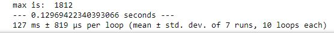

תוצאות מהבדיקה הנוכחית (ללא שינוי של הקוד):
— 0.27300000190734863 seconds —
278 ms ± 10.4 ms per loop (mean ± std. dev. of 7 runs, 1 loop each)
148 ms ± 2.37 ms per loop (mean ± std. dev. of 7 runs, 10 loops each)
לייק 1
285 ms ± 5.1 ms per loop (mean ± std. dev. of 7 runs, 1 loop each)
מה מבינים מזה ? אינ לא בטוח שאני קורא את זה נכון
לייק 1
שהמדידה מראה שלוקח לקוד שלך לרוץ בערך 280 עד 290 מילישניות
משמע יש לאן להתשפר 
אהבתי את הטריק אני אבדוק אותו על דברים שאני עושה 
960 ms ± 55 ms per loop (mean ± std. dev. of 7 runs, 1 loop each)
זה טוב או רע?
2.45 שניות
בין אם הקוד צ’וקומוקו או המחשב פקקט, הלכתי להתאבד
לייק 1
יש לי הצעה טובה יותר בשבילך - לחזור לקוד הזה בהמשך ולייעל אותו
עזבו את זה…
השאלה האמיתית היא כמה יוצא לכם ב מלחמה וזהו?!
שם זה זמן ריצה אררררררררוך…

לייק 1
ונקנח בשאלה:
יש לי רשימה של טאפלס:
[(5,"l=[(“t”,6),(“a”,3),("b
איך אני ממיין את הרשימה ב .sort??
האם ניתן להתשמש ב key?
תודה
— 0.41918110847473145 seconds —
לאחר שבכיתי שעות רבות שהקוד לא רץ וכשהוא רץ זה לוקח יומיים ייעלתי וייעלתי ועוד פעם ייעלתי
2 לייקים
לפי המספרים כמובן ולא לפי האותיות…
המחשב שלי סתם איטי… 


91.2 ms ± 4.34 ms per loop (mean ± std. dev. of 7 runs, 10 loops each)
לייק 1
אוקיי, או שלא הבנתי, או שממש לא הבנתי. למה יש תחרות על ברונו הפיל, אבל אין תחרות על מלחמה (בלי שלום) ?
וחוץ מזה, לא כדאי לשלוח איזו פיסת קוד, שלא קשורה לתרגיל, אבל פועלת על אותו קובץ (רק כי ברור שלכולנו יש אותו) ולהשתמש בזמן ההרצה של פיסת הקוד הנ’ל ע’מ לנרמל את זמן ההרצה? ה OCD שלי במצוקה.
רץ על מכונה וירטואלית
i7 -7700K
16GB

--- 0.1629962921142578 seconds ---
עריכה:
ייעלתי את הקוד טיפה, ויש שיפור בזמנים:
--- 0.1139981746673584 seconds ---
לפי השיטה שים כתב:
114 ms ± 326 µs per loop (mean ± std. dev. of 7 runs, 10 loops each)
226 ms ± 13.5 ms per loop (mean ± std. dev. of 7 runs, 1 loop each)
כולל שטות שהוספתי בסוף כדי שנוכל לקבל גם את המקומות השני, שלישי, רביעי…וכן הלאה, כבקשתנו.
-לפטופ גרוטאה בן 6, שגם בזמנו היה נחשב לבינוני.
לייק 1
מצטרף, למרות שהמחשב בן איזה 12
זה מה שיצא לי. את הבדיקה השניה לא הצלחתי לעשות, קיבלתי ארור…